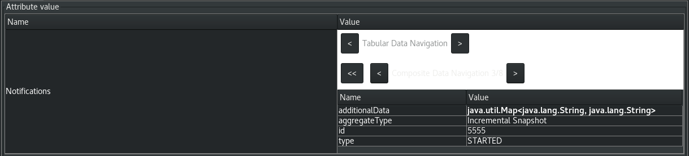

Debezium notifications
Overview
Debezium notifications provide a mechanism to obtain status information about the connector. Notifications can be sent to the following channels:
- SinkNotificationChannel
-
Sends notifications through the Connect API to a configured topic.
- LogNotificationChannel
-
Notifications are appended to the log.
- JmxNotificationChannel
-
Notifications are exposed as an attribute in a JMX bean.
- Custom
-
Notifications are sent to a custom channel that you implement.
Debezium notification format
Notification messages contain the following information:
| Property | Description | ||
|---|---|---|---|
id |
A unique identifier that is assigned to the notification. For incremental snapshot notifications, the
|
||
aggregate_type |
The data type of the aggregate root to which a notification is related. In domain-driven design, exported events should always refer to an aggregate. |
||
type |
Provides status information about the event specified in the |
||
additional_data |
A Map<String,String> with detailed information about the notification. For an example, see Debezium notifications about the progress of incremental snapshots. |
||
timestamp |
The time when the notification was created. The value represents the number of milliseconds since the UNIX epoch. |
Available notifications
Debezium notifications deliver information about the progress of initial snapshots or incremental snapshots.
Debezium notifications about the status of an initial snapshot
The following example shows a typical notification that provides the status of an initial snapshot:
{
"id": "5563ae14-49f8-4579-9641-c1bbc2d76f99",
"aggregate_type": "Initial Snapshot",
"type": "COMPLETED", (1)
"additional_data" : {
"connector_name": "myConnector"
},
"timestamp": "1695817046353"
}| Item | Description |
|---|---|
1 |
The
|
The following table shows examples of the different payloads that might be present in notifications that report the status of initial snapshots:
| Status | Payload |
|---|---|
STARTED |
|
IN_PROGRESS |
Field |
TABLE_SCAN_COMPLETED |
In the preceding example, the
Fields |
COMPLETED |
|
ABORTED |
|
SKIPPED |
|
Debezium notifications about the progress of incremental snapshots
The following table shows examples of the different payloads that might be present in notifications that report the status of incremental snapshots:
| Status | Payload |
|---|---|
Start |
|
Paused |
|
Resumed |
|
Stopped |
|
Processing chunk |
|
Snapshot completed for a table |
In the preceding example, the
|
Completed |
|
Enabling Debezium notifications
To enable Debezium to emit notifications, specify a list of notification channels by setting the notification.enabled.channels configuration property.
By default, the following notification channels are available:
-
sink -
log -
jmx
|
To use the |
Access to Debezium JMX notifications
To enable Debezium to report events that are exposed through JMX beans, complete the following configuration steps:
-
Enable the JMX MBean Server to expose the notification bean.
-
Add
jmxto thenotification.enabled.channelsproperty in the connector configuration. -
Connect your preferred JMX client to the MBean Server.
Notifications are exposed through the Notifications attribute of a bean with the name debezium.<connector-type>.management.notifications.<server>.
The following image shows a notification that reports the start of an incremental snapshot:

To discard a notification, call the reset operation on the bean.
The notifications are also exposed as a JMX notification with type debezium.notification.
To enable an application to listen for the JMX notifications that an MBean emits, subscribe the application to the notifications.
Custom notification channels
The notification mechanism is designed to be extensible. You can implement channels as needed to deliver notifications in a manner that works best in your environment. Adding a notification channel involves several steps:
Configuring custom notification channels
Custom notification channels are Java classes that implement the io.debezium.pipeline.notification.channels.NotificationChannel service provider interface (SPI).
For example:
public interface NotificationChannel {
String name(); (1)
void init(CommonConnectorConfig config); (2)
void send(Notification notification); (3)
void close(); (4)
}| Item | Description |
|---|---|
1 |
The name of the channel.
To enable Debezium to use the channel, specify this name in the connector’s |
2 |
Initializes specific configuration, variables, or connections that the channel requires. |
3 |
ends the notification on the channel. Debezium calls this method to report its status. |
4 |
Closes all allocated resources. Debezium calls this method when the connector is stopped. |
Debezium core module dependencies
A custom notification channel Java project has compile dependencies on the Debezium core module.
You must include these compile dependencies in your project’s pom.xml file, as shown in the following example:
<dependency>
<groupId>io.debezium</groupId>
<artifactId>debezium-core</artifactId>
<version>${version.debezium}</version> (1)
</dependency>| Item | Description |
|---|---|
1 |
|
Declare your implementation in the META-INF/services/io.debezium.pipeline.notification.channels.NotificationChannel file.
Deploying a custom notification channel
-
You have a custom notification channel Java program.
-
To use a notification channel with a Debezium connector, export the Java project to a JAR file, and copy the file to the directory that contains the JAR file for each Debezium connector that you want to use it with.
For example, in a typical deployment, the Debezium connector files are stored in subdirectories of a Kafka Connect directory (/kafka/connect), with each connector JAR in its own subdirectory (/kafka/connect/debezium-connector-db2,/kafka/connect/debezium-connector-mysql, and so forth). To use a signaling channel with a connector, add the converter JAR file to the connector’s subdirectory.
| To use a custom notification channel with multiple connectors, you must place a copy of the notification channel JAR file in each connector subdirectory. |